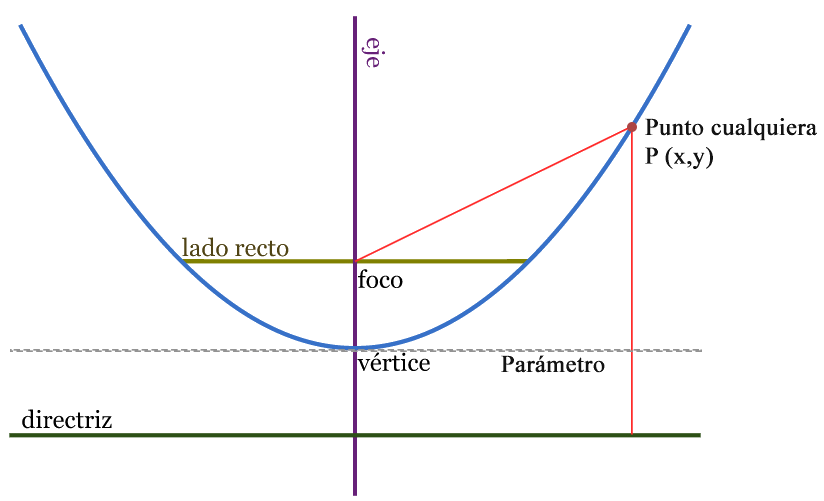

¿Qué es la parábola?
La parábola como lugar geométrico: Es el lugar geométrico que describe un punto que se mueve en el plano de tal manera que equidistan de un punto fijo el cual se llama foco y una recta fija llamada directriz.
Elementos de la Parábola

- Foco: el foco F es el punto fijo. Los puntos de la parábola equidistan del foco y la directriz.
- Directriz: es la recta fija D. Los puntos de la parábola equidistan de la directriz y el foco.
- Radio vector: es el segmento R que une el foco con cada uno de los puntos de la parábola. Es igual al segmento perpendicular a la directriz desde el punto correspondiente.
- Eje: es la recta E perpendicular a la directriz que pasa por el foco y el vértice. Es el eje de simetría de la parábola.
- Parámetro: p es la distancia entre el foco y el punto más próximo de la directriz.
- Vértice: es el punto V de la intersección del eje y la parábola.
- Distancia focal: distancia entre el foco F y el vértice V. Es igual a p/2.
- Puntos interiores y exteriores: la parábola divide el plano en dos regiones. Los puntos que están en la región del foco se llaman puntos interiores (I), mientras que los otros son los exteriores (J).
- Cuerda: segmento que une dos puntos cualesquiera de la parábola.
- Cuerda focal: una cuerda que pasa por el foco F.
- Lado recto: Cuerda focal paralela a la directriz D y, por tanto, perpendicular al eje E.
Parábola Horizontal
Su foco está sobre el eje X y son cóncavas hacia la derecha o a la izquierda.
|
Ecuación canónica:
|
Foco: F(p, 0) |
Directriz: x= -p |
Ecuación con el eje: y= 0 |
Lado Recto:
|
Concavidad:
Para determinar la concavidad de una parábola es necesario analizar lo siguiente:
Si p>0 entonces la parábola abre hacia la derecha.
Si p<0 entonces la parábola abre hacia la izquierda.
Parábola Vertical
Su foco está sobre el eje y, además son cóncavas hacia abajo a arriba.
|
Ecuación canónica:
|
Foco: F(0, p) |
Directriz: y= -p |
Ecuación con el eje: x= 0 |
Lado Recto:
|
Concavidad:
Si p>0 entonces la parábola abre hacia arriba.
Si p<0 entonces la parábola abre hacia abajo.